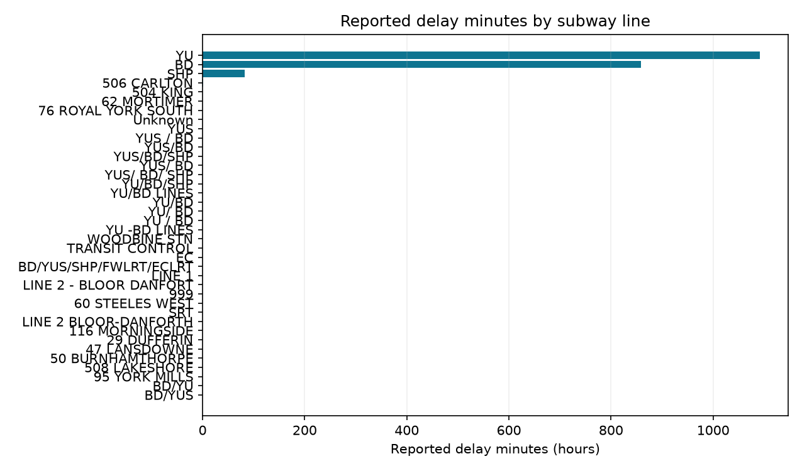

Power BI · SQL · Python · transit operations
TTC Subway Service Reliability
Analyze Toronto subway delay reports by line, station, month, time of day, and incident code. This project demonstrates data cleaning, metric definitions, SQL exploration, and a Power BI report plan.
What the data shows
The published file includes 45,475 reported incidents and 122,071 reported delay minutes. Line YU contributes 65,506 recorded minutes and BD 51,508. Many records contain zero or missing delay values after the documented fill rule, so incident counts and summed reported minutes describe different aspects of the feed.


How to reproduce
- Install dependencies with
pip install -r requirements.txt. - Run
python src/analyze.pyto download the source and regenerate cleaned data, summaries, and charts. - Run the queries in
sql/analysis.sqlwith DuckDB. Power BI starter files are inpowerbi/.
Interpretation: These are reported delay events and durations, not passenger delay minutes or a complete reliability score. Zero and missing delay values are retained according to the documented cleaning rule.